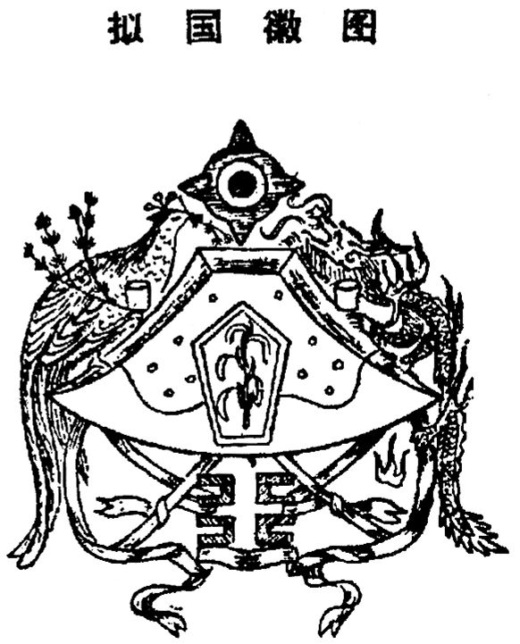
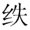
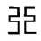

谨按西国国徽，由来甚久，其勾萌在个人，而曼衍以赅一国。昔者希腊武人，蒙盾赴战，自择所好，作绘于盾，以示区别。降至罗马，相承不绝。迨十字军[110]兴，聚列国之士而成师，惧其杂糅不可辨析，则各以一队长官之盾徽为识，由此张大，用于一家，更进而用于一族，更进而用于一国。故权舆之象，率为名氏，表个人也；或为十字，重宗教也。及为国徽，亦依史实，因是仍多十字，或摹盾形，复作衮冕旗帜之属，以为藻饰。虽有新造之国，初制徽识，每不能出其环中，盖文献限之矣。今中华民国，已定嘉禾为国徽，而图象简质，宜求辅佐，俾足以方驾他徽，无虑朴素。惟历史殊特，异乎欧西，彼所尚者，此不能用。自应远据前史，更立新图，碻有本柢，庶几有当。考诸载籍，源之古者，莫如龙。然已横受抵排，不容作绘。更思其次，则有十二章[111]。上见于《书》，其源亦远。汉唐以来，说经者曰：日月星辰，取其照临也；山，取其镇也；龙，取其变也；华虫，取其文也；宗彝，取其孝也；藻，取其洁也；火，取其明也；粉米，取其养也；黼，取其断也；黻，取其辨也[112]。美德之最，莫不赅备。今即从其说，相度其宜，会合错综，拟为中华民国徽识。作绘之法，为嘉禾在于中，是为中心。嘉禾之状，取诸汉“五瑞图”石刻[113]。干者，所以拟盾也。干后为黼，上缀粉米。黼上为日，其下为山。然因山作真形，虑无所置，则结缕成篆文，而以黻充其隙际。黼之左右，为龙与华虫，各持宗彝。龙复有火丽其身，月属于角。华虫则其咮衔藻，其首戴星。凡此造作改为，皆所以求合度而图调和。国徽大体，似已略具。（如下图）复作五穗嘉禾简徽一枚，（图略）于不求繁缛时用之。又曲线式双穗嘉禾简徽一枚，（图略）于笺纸之属用之。倘更得深于绘事者，别施采色，令其象更美且优，则庶几可以表华国之令德，而弘施于天下已。

案元图龙及华虫尾皆内向，作曲袌式，后经国务院会议，外交部主改为尾向外张如今图。
注 释
[109] 本篇连同国徽图最初发表于1913年2月《教育部编纂处月刊》第一卷第一册“文牍录要”栏。未署名。原为句读。
鲁迅1912年8月28日日记载：“与稻孙、季巿同拟国徽告成，以交范总长。”这篇说明文字当写于此时或稍前。据当事人钱稻孙说，国徽图系他所绘，说明书为鲁迅所写（1961年5月17日至19日在鲁迅博物馆谈话）。按范总长，指范源濂（1877—1928），字静生，湖南湘阴人，教育家。时任教育总长。
[110] 十字军 公元十一至十三世纪英、法、德等国封建君主联合各国天主教势力以收复耶路撒冷圣地的名义，对东部地中海沿岸伊斯兰国家和地区发动了八次大规模远征，因从征者皆以红十字缝于衣服右肩为标记，故名。
[111] 十二章 古天子的冕服制度。见《尚书·益稷》：“日、月、星辰、山、龙、华虫，作会（绘）；宗彝、藻、火、粉米、黼、黻，绣。”唐孔颖达疏：“此经所云凡十二章。日也，月也，星也，山也，龙也，华虫也，六者画以作绘，施于衣也；宗彝也，藻也，火也，粉米也，黼也，黻也，此六者

以为绣，施之于裳也。……《周礼·司服》之注具引此文，乃云：‘此古天子冕服十二章也。’”按：华虫，即雉；宗彝，宗庙供奉用的酒器；藻，水草有文者；粉米，白米，指白色米形绣文。黼、黻均为古代礼服上的绣文，黼为黑白相次，作斧形，刃白身黑；黻为黑青相次，作
形。[112] 汉唐以来说经者的这段话，见宋代蔡沈撰《书经集传》卷一“益稷”篇：“日月星辰，取其照临也；山，取其镇也；龙，取其变也；华虫，雉，取其文也；……宗彝，虎蜼，取其孝也；藻，水草，取其洁也；火，取其明也；粉米，白米，取其养也；黼若斧形，取其断也；黻为两己相背，取其辨也。”
[113] 汉“五瑞图”石刻 即“李翕黾池五瑞图”，东汉摩崖刻石，灵帝建宁四年（171）刻，在今甘肃成县。刻有黄龙、白鹿、木连理、嘉禾、甘露五种图像，以颂扬武都太守李翕修道利民致呈祥瑞事。